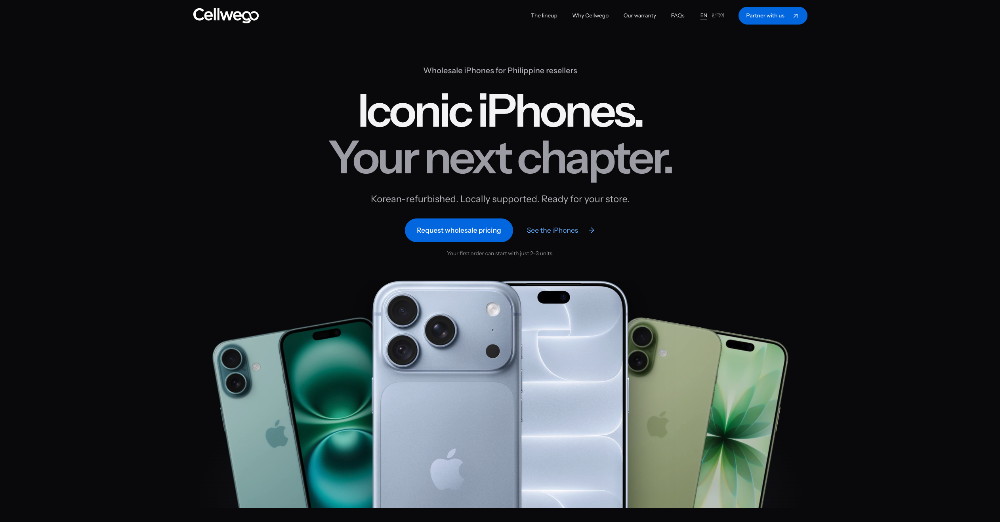
01 / EnterpriseLead Developer
Cellwego ERP
One platform. Connected operations.
End-to-end corporate workflows
Explore projectCellwego company website · Supplied screenshot
I build the systems
behind everyday work.
Full-stack applications, public platforms, and data tools. From architecture to delivery, I help teams turn complex workflows into software people can rely on.
Work that reaches
people.
Enterprise, public service, and everything in between. Six projects, each with a different problem to solve.

One platform. Connected operations.
End-to-end corporate workflows
Explore projectCellwego company website · Supplied screenshot
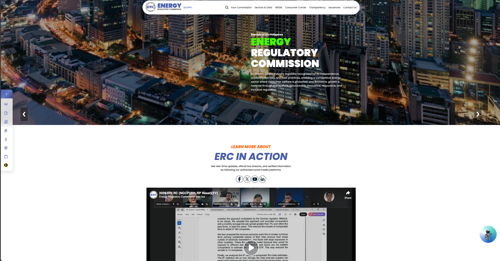
Public information, at national scale.
100,000+ monthly visitors
Explore projectERC Website · Screenshot provided by Mark Joshua Reyes

Information for a more resilient community.
1,000+ downloads · 4.8 / 5 rating
Explore projectCurrent public website · October 2026
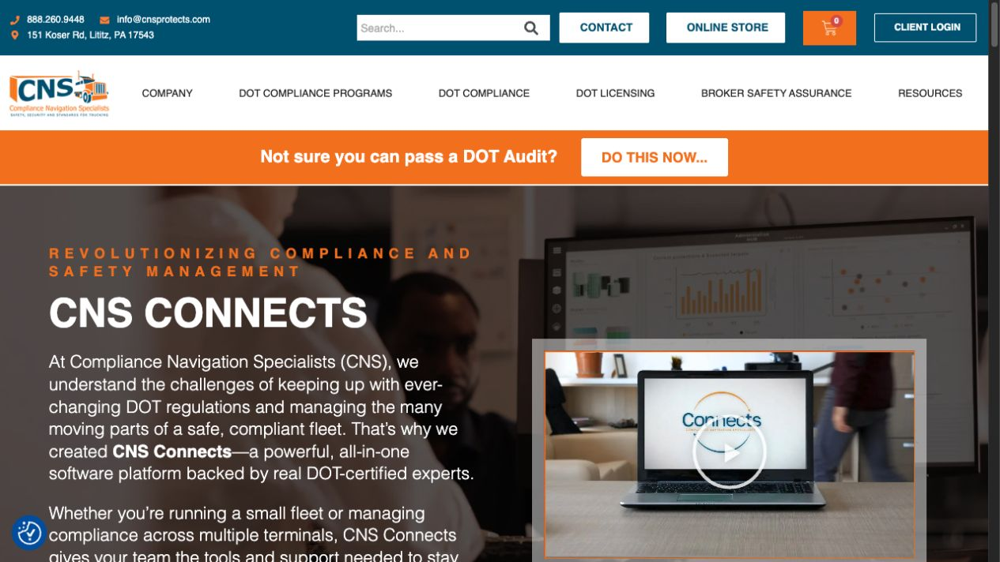
Supporting safer, more compliant fleets.
Software for the logistics industry
Explore projectCurrent public website · October 2026
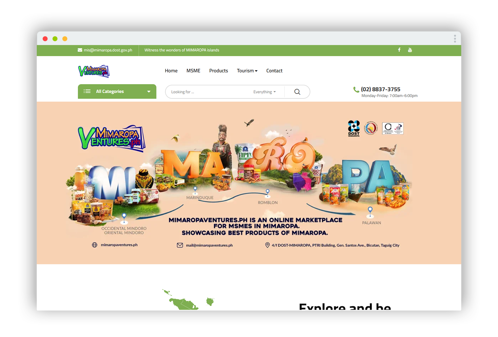
A regional marketplace, built for discovery.
Regional e-commerce platform
Explore projectMIMAROPA Ventures · Screenshot provided by Mark Joshua Reyes

Better data. Better preparedness.
Predictive medical inventory modeling
Explore projectCurrent public website · October 2026
Lead Developer
Lead Developer
Lead Developer
Co-developer
Lead Developer
Co-developer
Co-founder & Lead Software Developer
Lead Developer
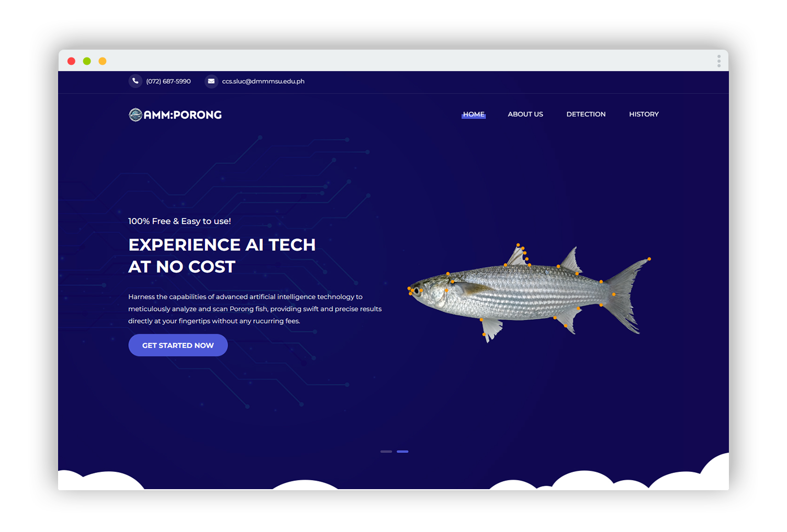
Lead Developer
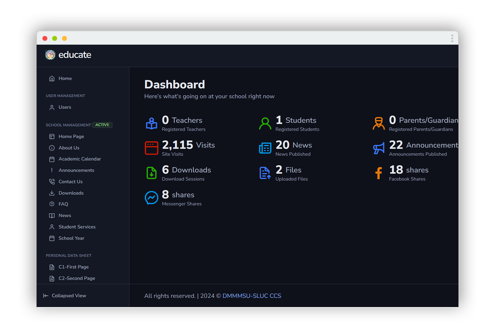
Lead Developer
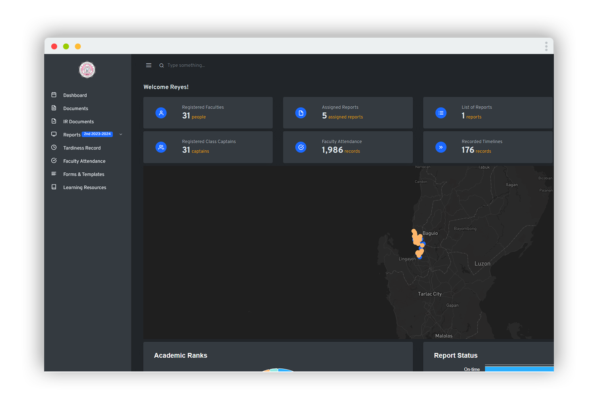
Lead Developer
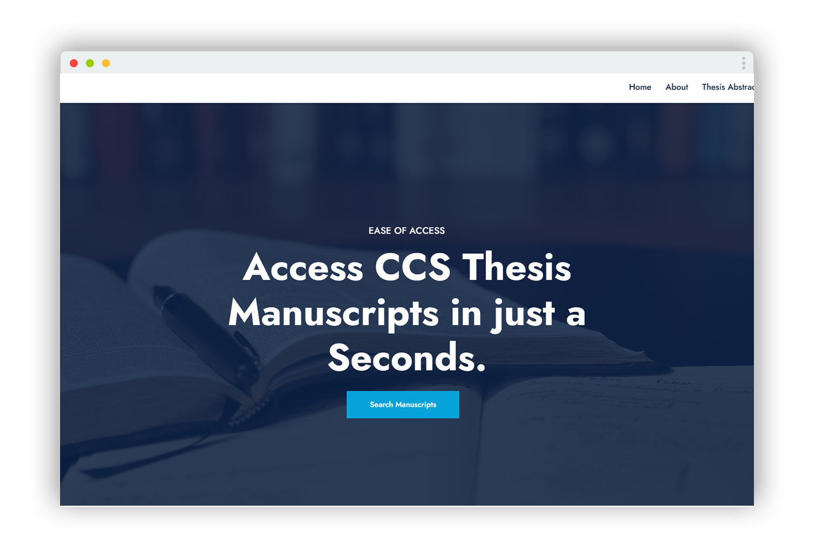
Lead Developer
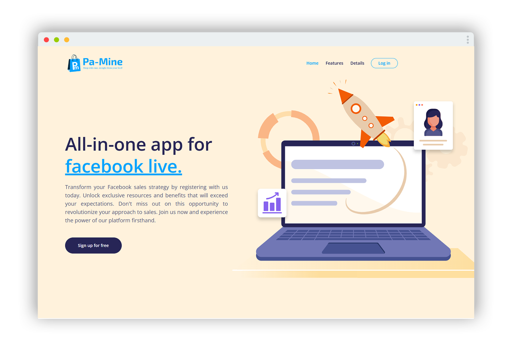
Lead Developer
Lead Developer
Lead Developer
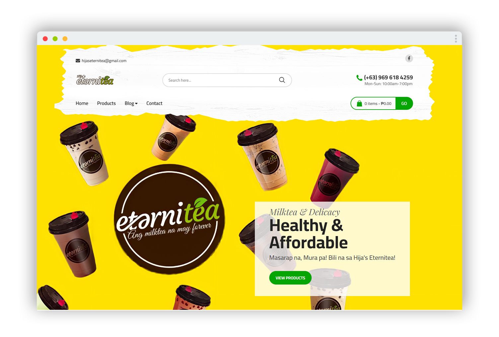
Lead Developer · Award-winning thesis
Python compiler on Android · Java / Chaquopy
Text ↔ binary conversion · Java / Chaquopy
Peer-to-peer Bluetooth chat · Android / Java
Fork · Upstream AI / computer vision project
No projects match. Try another keyword or category.
Professional projects and personal code, together. Repository links open on GitHub; forks are labeled explicitly.
Building across logistics, healthcare, retail, and public service—with ownership from architecture to delivery.
Feb 2026 — Present
Architect enterprise infrastructure and cloud environments. Lead company-wide systems, establish engineering standards, and mentor developers.
Oct 2025 — Present
Develop procurement and inventory applications with ASP.NET Core MVC and React. Manage Azure resources with consumption-based cost strategies.
Nov 2024 — Nov 2025
Develop enterprise applications for a U.S. trucking and logistics client supporting 10,000+ active users. Optimize SQL Server queries and .NET backend logic.
Jun 2024 — Dec 2024
Build predictive healthcare analytics, medical inventory models, and secure APIs with Python, Jupyter, C#, and FastEndpoints.
Jul 2023 — May 2024
Lead development of the public portal serving 100,000+ monthly visitors, and modernize regulatory applications while preserving data integrity.
May 2022 — Nov 2023
Automate employee onboarding, division assignment, and ID generation. Mentor three junior developers and lead architectural decisions. Earlier role: Computer Programmer I, May–December 2022.
Co-founder & Lead Software Developer
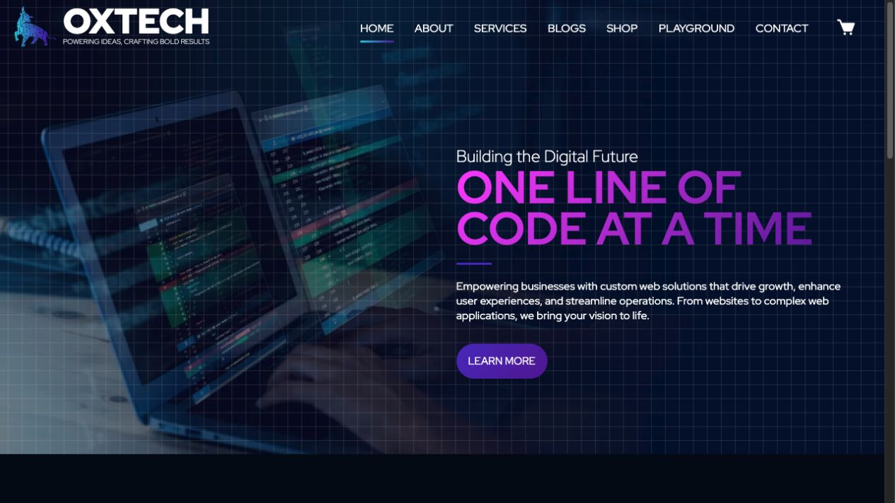
Current public website · October 2026
Web and mobile projects since 2021.
Technologies I’ve used across production work and personal projects. Organized by the problems they help solve.
AI development tools I’ve worked with.
I’m a developer based in Cavite, Philippines, with a background in computer science and a habit of learning by building.
My work spans web and mobile applications, cloud infrastructure, and data analysis. I’ve also mentored junior developers and shared technical knowledge through speaking engagements.
Read my résumé ↓Don Mariano Marcos Memorial State University — South La Union Campus · 2018–2022
Thesis: Implementing Responsive Design in the Web Portal for Barangay Community.
Computer troubleshooting and technical support, Microsoft Office, basic Photoshop editing, Linux, mathematics and basic calculus, website deployment, and server configuration.